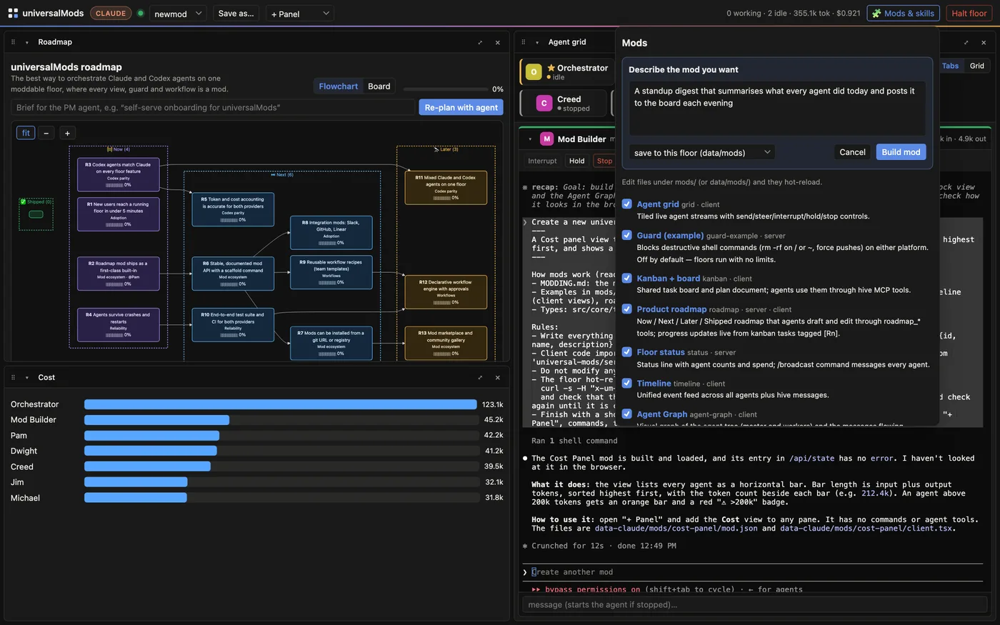
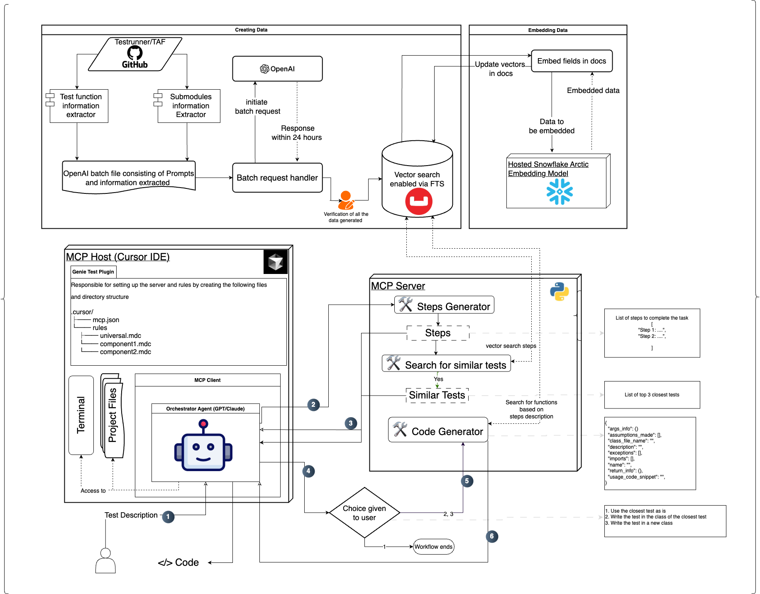

Adventurous
Always up for something new, and happy to be out of my comfort zone.
Software Engineer · Bangalore, India
Off the clock · Training log
Software engineer with 1+ years of experience in distributed systems, backend and security. I test and harden distributed database systems at Couchbase, publish security research, and build LLM developer tooling that gets used in production.
Obsessed with progress. Adventurous, fitness focused, and always chasing a better number. Running, HYROX, and whatever comes next.
Always up for something new, and happy to be out of my comfort zone.
I like things I can measure, and I keep chasing a better number. Running and HYROX are where most of it goes.
I pick things that are hard on purpose, then train until they are not.
Couchbase

Open source, MIT licensedA moddable local floor for running a team of Codex and Claude Code agents.

Test automation, QE toolingGenerates functional tests from RAG over a team's own tests and helper functions.
Published research, ICCCT 2025LLM agents detect and repair C and C++ vulnerabilities, grounded by RAG over MITRE's Top 25 CWEs. 60.71% more correct than a single-LLM baseline.
Personal projectA packet analyzer in Go that streams live captures to a browser.
National hackathon, top 10 of 75 teamsCrowdsourced accelerometer data and an RNN warn drivers of hazards ahead.
Personal project, built before AI coding toolsA trading simulator on historical market data, and where most of my full stack knowledge comes from. Built before AI coding tools, from Stack Overflow and YouTube tutorials.
Progress is the point. I like things I can measure, and I keep chasing a better number.
Running and HYROX are where it shows up most.
Relative speed, from my times
I am a software engineer with 1+ years of experience in Quality Engineering, making sure software meets release standards and reliability requirements. My work is testing distributed systems at scale and building the automation and tooling around it.
I graduated in 2025 with a B.E. in Computer Science, specialising in Computer Networks and Security, from PES University. My final-year research was published at ICCCT 2025.
| Distributed systems | Testing and hardening distributed database systems at scale: consistency, fault tolerance and reliability. |
|---|---|
| Backend engineering | Building and validating backend services across the stack. |
| Security engineering | Published research on automated vulnerability detection and repair; security practices through the development lifecycle. |
| AI and LLM tooling | RAG pipelines and MCP servers that ship and get used in production, not only prototyped. |
| Cloud and infrastructure | AWS, Docker and Kubernetes for deploying and operating distributed systems. |
| Languages | Python, JavaScript, Go, Java, C |
|---|---|
| DevOps | AWS, Docker, Kubernetes, Git, Jenkins |
| Frameworks and libraries | Django, Flask, React, Node.js and Express, PyTorch, npm |
| Databases | MySQL, MongoDB |
| Automation and AI | Python, PyTorch, TensorFlow, Selenium, Bash |
| Security | Kali Linux |
| Other | Raspberry Pi, Linux, HTML and CSS, jQuery, Markdown |
Google via Coursera · August 2023 · View certificate
Foundations of cybersecurity, managing security risk, networks and network security, Linux and SQL, assets, threats and vulnerabilities, detection and response, automating security tasks with Python, and preparing for cybersecurity jobs.
DeepLearning.AI and Stanford via Coursera · September 2022 · View certificate